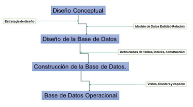

GEODATABASE que es un modelo genérico para el tratamiento de información geoespacial, almacena objetos geográficos, sus atributos, sus relaciones (espaciales o no) y el comportamiento de cada uno de sus elementos.
En este esquema se migra de capas temáticas (colección de elementos geográficos) a entidades reales como red de carreteras, red de alcantarillado, energía eléctrica, etc. y se incorporan el concepto de entidad cuando nos referimos a transformadores, carreteras o lagos. La utilidad de este concepto refleja el tratamiento de nuestros datos para realizar análisis espacial.
Las ventajas de trabajar con un GEODATABASE es un acceso multiusuario, ser compatible con los siguientes manejadores de bases de datos: Oracle, Informix, SQL Server, IBM DB2, Microsoft Access. Reside en un sistema gestor de bases de datos estándar, esto permite que se aprovechen todas las ventajas de los grandes sistemas gestores de BD y esto se traduce en una mayor sencillez para administrar una base de datos corporativa.
Además de estas ventajas, ofrece diversos beneficios, entre los que destacan:
1. Gestión de datos centralizada. Esta propiedad la da el DBMS que se esté empleando.
2. Edición multiusuario. Multitud de usuarios pueden realizar tareas de edición de los datos. Se pueden realizar sesiones de edición que duren semanas o meses.
3. Comportamiento de los objetos. Una vez definido el comportamiento de cada tipo de elemento se hace referencia a ríos, carreteras, parcelas, etc. los ríos tienen propiedad de flujo, caudal, etc. y solo se conectan a otros ríos o cuerpos de agua. Esto también le da propiedad de simbología determinada
4.5.1 Diseño de bases de datos geoespaciales
Toda base de datos requiere un diseño que incluya a los usuarios, sus necesidades, los datos, así como la estructura de la organización para la cual estará diseñada. En contexto de los Sistemas de Información Geográfica una base de datos es un componente primordial ya que permite transformar los datos en información, por lo que este diseño se hace aún más esencial.

El diseño conceptual debe incluir la estructura de la organización para saber qué datos requiere el sistema, qué documentos se generan, cómo se utilizan los datos, quien los utiliza, etc. y debe estar diseñado para que al menos resuelva los problemas más generales identificados durante la etapa de diseño.
El diseño de la base de datos debe incluir por su parte la definición de tablas, índices, vistas, clusters y espacio, en esta etapa no se debe perder de vista los objetivos, los límites y los alcances de la base de datos. Antes de la construcción de la base de datos es importante también:
• Definición del formato de los datos: número, texto, fecha o lógico.
• Definición de los datos contenidos: se le da el nombre a la columna, generalmente el nombre depende del contenido (ej. Municipio, población, superficie, etc.
• Valores restringidos: se aplican a restricciones sobre valores de un dato y se utilizan para validar la entrada de datos, así como también aceptar datos por omisión. (P.ej. En atributos de hora, fecha, valores negativos, intervalos, etc.)
4.5.2 Manejo de información geoespacial
Los tipos de Manejadores de bases de datos se clasifican de acuerdo a la manera en cómo almacenan y manipulan los datos. Los sistemas de Información Geográfica trabajan con tres tipos:
A. Relacional (RDBMS). Mayormente usadas en tablas de dos dimensiones (columnas y renglones).
B. De Objetos (ODBMS). Emplea herramientas orientadas a objetos, muchas interfases en herramientas de SIG utilizan ya este tipo de manejadores.
C. Relacional y Objetos (ORDBMS). Utiliza la estructura de la Relacional con otra que soporta objetos. Ejemplos de ello son: IBM, DB2, MICROSOFT SQL Y ORACLE. Este modelo es muy empleado en SIG.
Para poder elaborar y trabajar con un GEODATABASE es necesario conocer su estructura interna a través de la cual se almacena la información, se realiza topología y se puede llevar a cabo Análisis Espacial, ésta comprende:
Los Feature Classes.
• Es una Colección de Rasgos que representan los mismos elementos geográficos como: pozos, parcelas, tipos de suelo.
• Todos los elementos deben tener la misma representación espacial (llámese punto, línea o polígono) y compartir un grupo de atributos descriptivos comunes.
• Todos los elementos deben tener la misma referencia espacial.
• Elementos Individuales deben compartir relaciones espaciales con otros rasgos (p.ej. Los polígonos adyacentes comparten límites a través de reglas de integridad bien definidas).
• Una vez que has identificado el conjunto de datos o elementos y cómo los representarás, se le pueden especificar sus propiedades. Dichas propiedades incluyen la manera en que las vas a representar.
Los Feature Dataset, cuyas características son:
• Organizan una colección de Feature Classes para diversos propósitos. Uno de ellos es para manejar relaciones espaciales.
• Modela tanto estructuras de feature class como estructuras con relación compleja ya elaborada.
• Modela y representa relaciones espaciales a partir de redes y topologías como capacidad en un contexto de SIG.
• Las topologías definen cómo los elementos comparten geometría y controlan su integridad a partir de reglas y editando su comportamiento. Ejemplo: las manzanas no pueden traslaparse con las líneas de las calles).
• Las redes se utilizan para modelar conectividad y flujo entre elementos.
• Los grupos de datos tipo raster también utilizan una estructura relacional con un acceso masivo al igual que los vectores. También incluye un número extenso de mecanismos para agregar comportamiento.
El Geodatabase trabaja bajo este esquema o estructura:
Dataset. Son las especificaciones para un feature class o catálogo raster o una tabla de atributos.
Dominios. Se refiere a las características que determinan la lista o el rango de valores válidos para atributos; estas reglas controlan el comportamiento del software para mantener la integridad de los datos.
Relaciones. Son las relaciones explícitas entre atributos; propiedad de las bases de datos usadas en SIG que definen cómo las columnas se relacionan con columnas en otra tabla. Tienen dirección de cardinalidad.
Reglas Espaciales. Modelan cómo los elementos u objetos se relacionan de manera geométrica con otros objetos. El geodatabase tiene la propiedad de establecer reglas topológicas complejas.
Capas de Mapas. Incluyen mapas interactivos y son todas las especificaciones que determinan la representación de los objetos o elementos (símbolos para cada tipo de objeto).
Bibliografia:
Tópicos Selectos de TI: Tecnologías Emergentes en el Área de Base de Datos (topicos5101jhbc.blogspot.com)
¿Qué es Base de datos en la nube? - Definición en WhatIs.com (computerweekly.com)
https://www.acens.com/wp-content/images/2014/02/bbdd-nosql-wp-acens.pdf
https://www.unir.net/ingenieria/revista/bases-datos-big-data/
https://centrogeo.repositorioinstitucional.mx/jspui/bitstream/1012/154/1/10-Geodatabase%20-%20Diplomado%20en%20An%C3%A1lisis%20de%20Informaci%C3%B3n%20Geoespacial.pdf